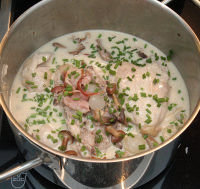

| Zutaten für 4 Portionen | |
| 1 | küchenfertiges fleischiges Hähnchen (etwa 1.2 kg) |
| Salz, Pfeffer | |
| 2 | kleine rote Paprikaschoten |
| 200 g | Perlzwiebeln |
| 100 g | durchwachsener Speck, in Streifen |
| 2 El | Öl |
| 220 g | kleine frische Champignons |
| 6 dl | Hühnerbrühe |
| 2 Tl | Speisestärke |
| 200 g | saure Sahne |
Zubereiten: 25 Minuten
Garen: 1 Stunde
Ofen auf 220°C vorheizen.
Hähnchen waschen, trocken tupfen und in 6-8 Portionen teilen. Salzen, pfeffern und in einen grossen Bräter legen. Ein Bräter ist wohl eine grosser Gusseisentopf.
Paprikaschoten putzen, waschen und in etwa 1 cm breite Streifen schneiden und zu den Hühnerstücken geben.
Wasser aufkochen. Zwiebeln in einer Schüssel mit dem kochendem Wasser übergiessen und 5 Minuten ziehen lassen. Das Wasser abgiessen, die Zwiebeln pellen und in den Bräter geben.
Die Speckstreifen ebenfalls in den Bräter geben.
Oel über alle Zutaten träufeln und das Gericht 20 Minuten im Backofen (Gas 4; Umluft 200°C) garen.
Pilze putzen und in den Bräter geben. Alles nochmals 20 Minuten garen.
Bouillon zubereiten.
Bräter aus dem Ofen nehmen und auf den Herd stellen. Brühe angiessen und alles 10 Minuten köcheln lassen.
Stärke mit Wasser anrühren. Zum Gericht giessen und dieses unter rühren andicken.
Saure Sahne untermischen und alles kurz erhitzen. Mit Salz und Pfeffer abschmecken. Schnittlauch darüber streuen und servieren.
Die Gemüseauswahl variiert mit der Jahreszeit. So kann man Kartoffeln und in Stücke geschnittene Möhren oder Petersilienwurzeln mitgaren. Auch Lauch und Knollensellerie eignen sich für dieses Gericht.
Werbung für eine Rezeptkartensammlung
RE, 4.2.2006 wegen der Sauce wird das ein sehr reichhaltiges Essen. Schmeckt super. Ich hatte Lauch verwendet statt Perlzwiebeln. Paprikaschoten habe ich interpretiert als Peperoni. Kam gut. Mit Chilis könnte es recht interessant sein. Ich verwendete eine Gratinform was den Nachteil hat, dass herausragende Stücke verbrennen können.
Hat am 8.4.2010 sehr fein geschmeckt. RE
@LINKBACK_TAG@ @WAKELOCK@